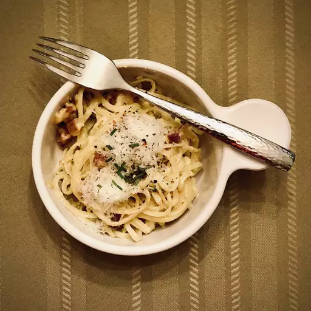

Carbonara Recipe

Dish Description
This fettuccine carbonara is a delectable, mouth-watering pile of yummy goodness!
I recommend a nice salad with it — that's all you will need for a complete meal.
Ingredients Needed
- 5 teaspoons olive oil
- 4 shallots, diced
- 1 pound bacon, cut into strips
- 1 large onion, cut into thin strips
- 1 ckive garkuc, chopped
- 1 (16 ounce) package dry fettucine pasta
- 3/4 cup shredded Parmesan cheese
- 3 egg yolks
- salt and pepper to taste
How to Make Fettucine Carbonara
-
Heat olive oil in a large heavy saucepan over medium heat.
Sauté shallots until softened. Stir in bacon and onion; cook and stir until bacon is evenly browned.
Stir in garlic when bacon is about half done. Remove from heat.
-
Bring a large pot of lightly salted water to a boil.
Add pasta and cook for 8 to 10 minutes or until al dente.
Drain pasta, then return it to the pot.
-
Whisk Parmesan, cream, and egg yolks together in a medium bowl.
Pour bacon mixture over pasta; stir in cream mixture.
Season with salt and pepper.